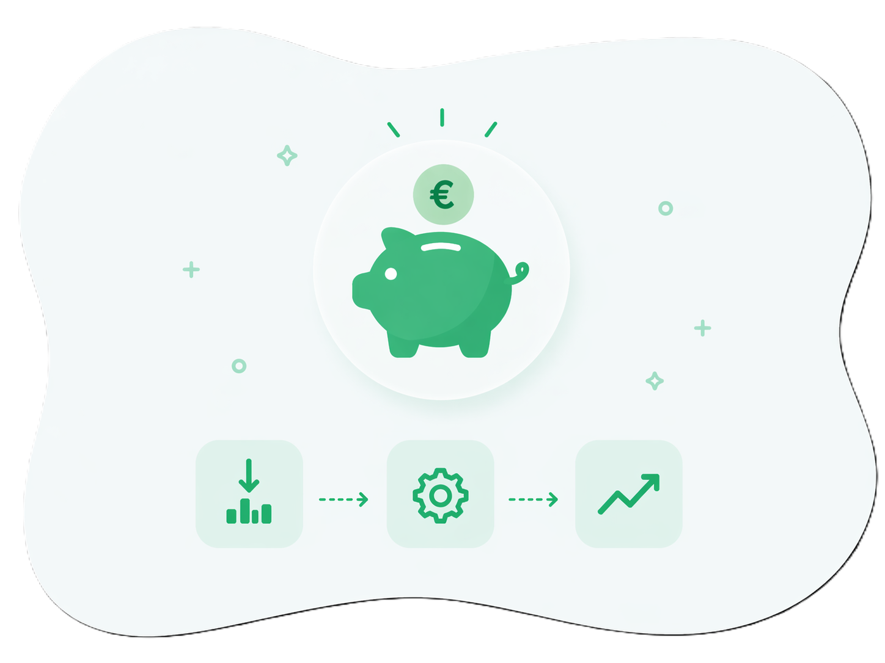

Muchas empresas trabajan con tecnología, pero sin un sistema claro
El problema no suele ser una sola herramienta, sino todo lo que queda separado,
duplicado o pendiente de hacer a mano cada día.
Altos costes en tecnología y servicios que apenas se usan.
Facturas, presupuestos, emails y documentos repartidos en sitios distintos.
Tareas manuales que consumen horas y provocan errores.
Herramientas que no se conectan entre sí y obligan a copiar datos.
Plan de acompañamiento
El primer paso siempre es entender cómo funciona tu empresa
Antes de construir nada, hacemos un primer diagnóstico: conocemos tus procesos,
revisamos los gastos tecnológicos que ya existen y buscamos cómo reducirlos con criterio.
A partir de ahí, ofrecemos un paquete completo de servicios básicos y consultoría continua
para ordenar la base digital, acompañarte en las decisiones y preparar el terreno para futuras
automatizaciones.
Análisis de procesos reales de la empresa.
Revisión de costes, herramientas y servicios existentes.
Base digital completa: web, dominio, email y configuración inicial.
Consultoría constante para mejorar por fases.

Auditoría inicial
Auditoría para ahorro de costes
Estudiamos los servicios que ya está pagando tu empresa para detectar duplicidades, cuotas por encima de lo necesario y herramientas infrautilizadas. La idea es clara: pagar solo por lo que realmente necesitas y abaratar la base digital desde el inicio.
Plan de acompañamiento
Qué incluye el paquete básico
Desde 30€/mes + IVA
Auditoría inicial de costes y servicios digitales
Web profesional para presentar tu negocio
Dominio y configuración inicial
Email corporativo bien estructurado
Formulario de contacto y datos clave de empresa
Acompañamiento continuo para decidir con criterio
Presencia digital
Web y presencia digital
Una web profesional para presentar tu negocio con claridad, transmitir confianza y facilitar el contacto con tus clientes.
Correo profesional
Email corporativo bien configurado
Correo profesional, ordenado y preparado para que la comunicación de tu empresa sea clara, fiable y fácil de gestionar.
Acompañamiento
Acompañamiento y consultoría constante
Te acompañamos de forma continua para resolver dudas, revisar decisiones tecnológicas y mantener una dirección clara a medida que tu empresa avanza.
Evolución opcional
Si quieres llevar tu sistema más allá
Podemos incorporar software y automatizaciones por fases, manteniendo el acompañamiento
y adaptando la cuota a lo que tu empresa necesite en cada momento.
Registra entradas, salidas y datos internos de forma ordenada.
Facturación
Facturas y Verifactu
Ordena la emisión y seguimiento de facturas desde un flujo claro.
Agenda
Citas y reservas
Reserva, confirma y recuerda citas sin llamadas repetidas.
Datos
Análisis y alertas
Resume datos clave y detecta cambios importantes a tiempo.
Documentos
Tickets y OCR
Lee tickets, facturas o PDFs y evita copiar información a mano.
Operaciones
Pedidos y estados
Centraliza estados, responsables y avisos de cada pedido.
WhatsApp
Mensajes y seguimientos
Envía avisos, recordatorios y respuestas conectadas a tus procesos.
Telegram
Avisos internos
Notifica al equipo cuando ocurre algo importante.
Plan avanzado
Imagina todo esto dentro de un único sistema adaptado a tu negocio
Cuando la base digital y las automatizaciones concretas ya se quedan cortas, construimos
un software propio alrededor de tu forma real de trabajar: menos datos dispersos,
menos pasos repetidos y más control sobre lo que ocurre cada día.

EVITAMOS:
Procesos internos desordenados o repartidos en demasiadas herramientas.
Documentos, PDFs, partes o facturas que obligan a copiar datos a mano.
Falta de control sobre qué está hecho, qué falta y quién tiene cada tarea.
Paneles internos, registros, avisos e integraciones conectadas en una herramienta propia.
PROYECTOS
Casos reales de software a medida
Proyectos construidos junto a equipos para ordenar procesos internos concretos en distintos tipos de empresa.
Facturación rápida para taller, con clientes, vehículos e historial siempre localizados.
Pedidos de fábrica organizados por estados para saber qué se fabrica, qué falta y qué se entrega.
CRM inmobiliario para seguir leads, visitas y oportunidades sin perder ningún contacto.
Agenda de peluquería pensada para evitar solapes, huecos perdidos y mensajes manuales.
Mantenimiento de flotas con revisiones, tickets, kilómetros y avisos antes de que algo caduque.
Notas, tareas, voz e imágenes desde Telegram convertidas en una agenda clara para actuar.
Control de gimnasio con sesiones, bonos, ingresos, comisiones y reservas en un mismo panel.
Gastos de obra desde fotos: la IA ayuda a clasificar documentos y asociarlos a cada proyecto.
Flotas con consumos, ITV, seguros y alertas para controlar costes y evitar olvidos caros.
Entregas con rutas, tracking, albaranes y control económico sin depender de mensajes sueltos.
Citas privadas por Telegram con reservas, cambios, confirmaciones y recordatorios automáticos.
Servicios a medida, con atención cercana para tu negocio
Antes de hablar de herramientas, hablamos de tu empresa, de tus procesos y de lo que realmente
necesitas mejorar. Desde Mérida, acompañamos a empresas de toda Extremadura con una cercanía real
que hace que cada solución tenga sentido.
Desde MéridaEscucha cercanaToda Extremadura
Escuchamos antes de proponer
Cada servicio parte de comprender tu situación, tus dudas y el momento real de tu empresa.
Soluciones hechas a medida
No aplicamos una plantilla genérica: ajustamos procesos, canales y automatizaciones a tu forma de trabajar.
Acompañamiento cercano
Te ayudamos a tomar decisiones con criterio, explicando cada paso para que la tecnología sume de verdad.
La diferencia no está solo en la herramienta, sino en contar con un equipo que entiende tu negocio y lo convierte en una solución útil.
Contacto
Solicita una llamada
Indica tus datos y te llamamos en el día y hora que prefieras.